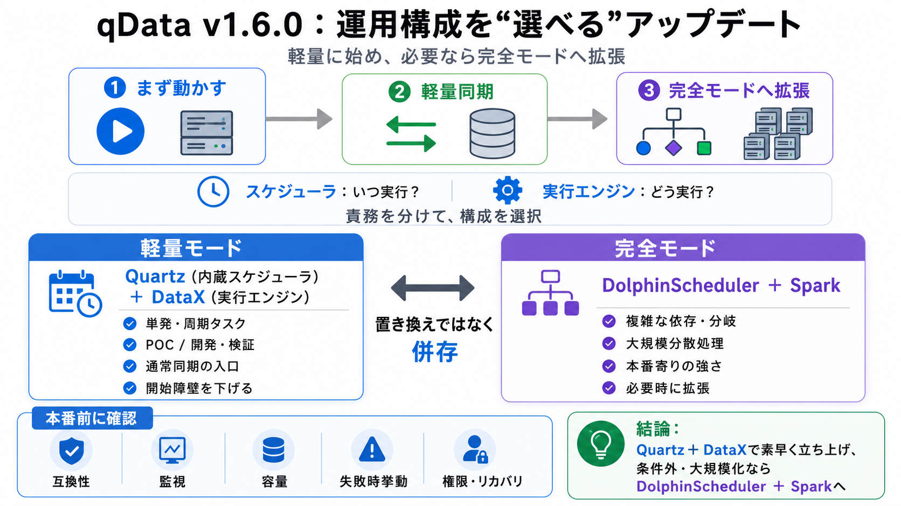

qData v1.6.0
02 / 14
運用構成を増強
Read
要点解読
オープンソースデータ中台「qData」v1.6.0（2026年7月公開）の運用構成アップデートを、 “スケジューラ選択”と“実行エンジン選択”の観点で読み解きます。
対象：Quartz（内蔵）／DataX（実行エンジン追加）／DolphinScheduler＋Spark（完全モード併存）
問題設定
03 / 14
固定セットが重い
Onboarding
壁
従来は「タスクを動かすための部品セット」が固定寄りで、初回導入・POC・検証・軽量な同期開始が重くなりがちでした。 その結果、まず“動くまで”の時間と学習コストが増えます。
起点
初期体験（まず動かす）
痛み
POC / 開発・デバッグ / バッチ同期の立ち上げ
役割差
04 / 14
いつ？どうやって？
Split
責務
スケジューラは「いつ実行するか（起動タイミング・依存制御）」、実行エンジンは「どう実行するか（処理方式・能力範囲）」を担います。 この分離が、軽量化と拡張を両立します。
スケジューラ
Quartz：定期実行 / 単一タスク志向
実行エンジン
DataX：対応プラグイン条件で軽量な集積実行
コア変更
05 / 14
部品選択へ拡張
v1.6.0
併存設計
v1.6.0では「固定の部品セット」から「必要に応じた組み合わせ選択」へ拡張しました。 中核は内蔵Quartz（スケジューラ）とDataX（実行エンジン）追加、そしてDolphinScheduler＋Spark（完全モード）を維持することです。
軽量（構成）
Quartz＋DataX
完全（構成）
DolphinScheduler＋Spark
原則
置き換えではなく併存
軽量 vs 完全
06 / 14
使い分けの軸
Choose
最適
Quartz＋DataXは“始めやすさ”と“軽量実行”を狙い、DolphinScheduler＋Sparkは“複雑な依存”と“大規模処理”に寄せた選択肢です。 同じUI/運用導線で完結するため、裏のエンジン差が体験を壊しにくい点が重要です。
Quartz＋DataX
軽量な実行経路：定期/単発開始・通常同期の入口
DolphinScheduler＋Spark
依存・分岐・大規模分散を重視：本番寄りの強さ
ポイント①
07 / 14
定期を内蔵で
Quartz
活用
Quartz（内蔵）により、複雑な依存制御が不要な単発・周期タスクは、DolphinSchedulerを必ずしも準備せずに開始できます。 その結果、初期導入・検証の心理的/技術的コストが下がります。
向く場面
単発 / 周期タスク（依存が軽い）
得られる効果
開始障壁の低減（まず動く）
ポイント②
08 / 14
同期を軽く
DataX
軽量経路
DataX追加により、Spark必須の構成から一歩踏み出し、対応プラグインや互換条件を満たす範囲でより軽い実行経路を選べます。 POCや日常的同期業務の立ち上げ速度に直結する狙いです。
狙い
POC / 開発・検証 / 軽量同期の開始速度
前提
プラグイン適合・データ型互換・読書き方式など条件次第
ポイント③
09 / 14
完全モードは残す
併存
戦略
QuartzやDataXはDolphinSchedulerやSparkの“単純代替”ではなく、タスクの複雑度に応じて使い分けます。 「必要になったら拡張する」というロードマップ設計がしやすくなります。
軽量
必要最小構成で開始
拡張
依存/規模が増えたら完全へ
設計思想
置き換えではなく併存
ポイント④
10 / 14
入口は一つ
UI
統一
スケジューラや実行エンジンが内部で切り替わっても、利用者は同じ製品入口（UI/運用導線）でタスク作成〜ログ追跡まで実施できます。 運用教育コストや切替時の混乱を減らす効果があります。
同一導線
タスク作成 / スケジュール設定 / 実行管理
追跡
状態確認 / ログ確認（定位）
FAQ要約
11 / 14
誤解を潰す
Q&A
整理
軽量モードは完全モードの“完全置換”ではなく併存であり、DataXも必ずしもSpark不要にしません。 また本番では安定性・監視・容量・権限・リカバリ等の評価が必要です。
軽量は置換？
いいえ：Quartz＋DataX と DolphinScheduler＋Spark の併存
DataXでSpark不要？
必ずしも：プラグイン・互換性・読書き条件に依存
Quartzは全部可能？
同じではない：複雑ワークフローはDolphinScheduler優先
本番推奨
無条件ではない：追加評価（運用/監視/容量）前提
所感
12 / 14
段階的採用が筋
総評
（要点）
v1.6.0は「機能削減」ではなく「段階的採用を可能にする構成柔軟性」を明確にしたアップデートです。 ただしDataXの適用条件に加え、本番判断に必要な互換テストや監視・容量計画は別途検討が要ります。
強み
スケジューラ×実行エンジンを独立選択
導入効果
POC/検証の「まず動く」時間短縮
注意
互換性・性能・失敗時挙動・運用監視は追加調査
まとめ
13 / 14
次に考えること
Action
指針
qData v1.6.0は「軽量（Quartz＋DataX）で立ち上げ→必要なら完全（DolphinScheduler＋Spark）へ拡張」という流れを設計で可能にします。 実運用では、DataX適用可否と本番運用指標（監視・容量・リカバリ）を検証して選定するのが現実的です。
検証の順
①Quartzで起動 ②DataXで同期 ③条件外なら完全へ
本番判断
監視/容量/失敗時挙動/権限/リカバリを評価
（日英）軽量モード = lightweight mode（軽量モード）／完全モード = full mode（完全モード）
REFERENCES
14 / 14
References
No references found